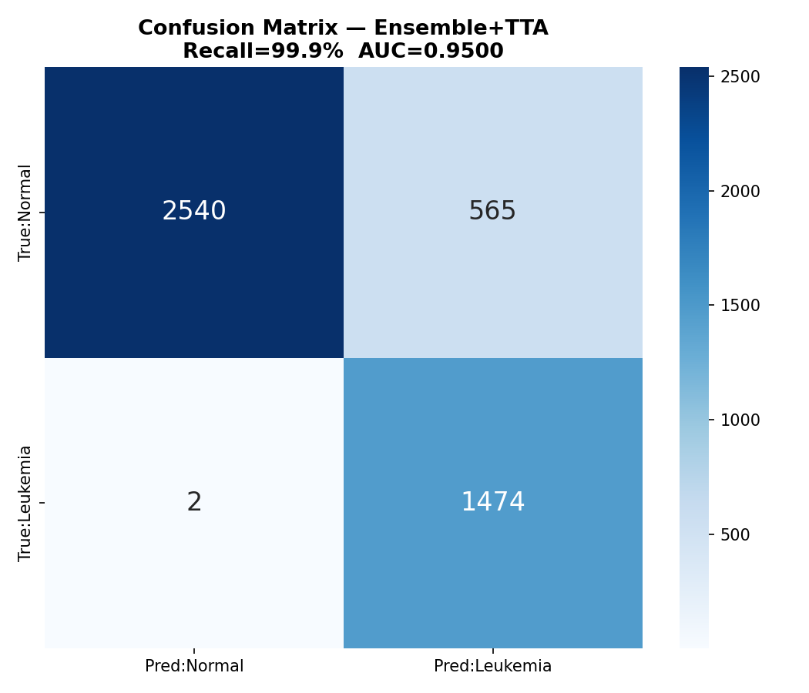
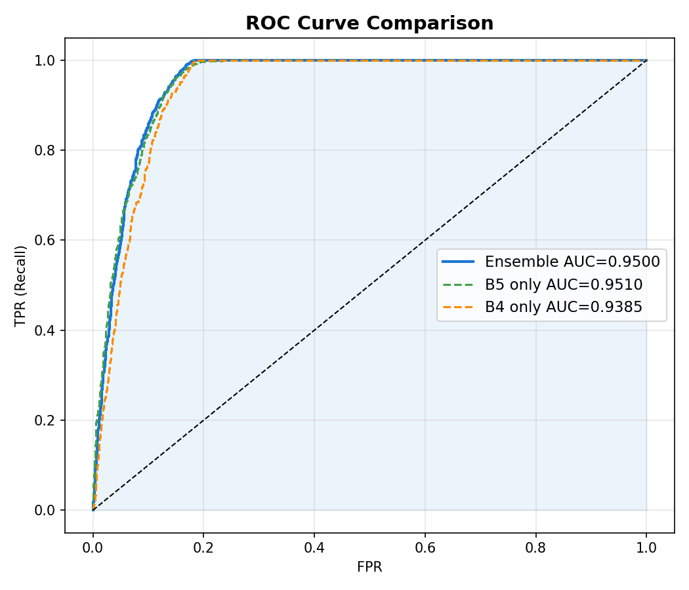
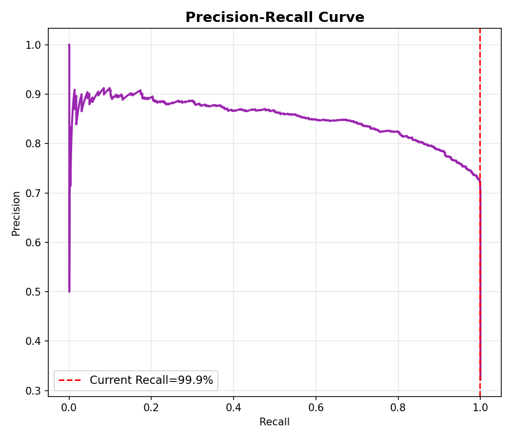
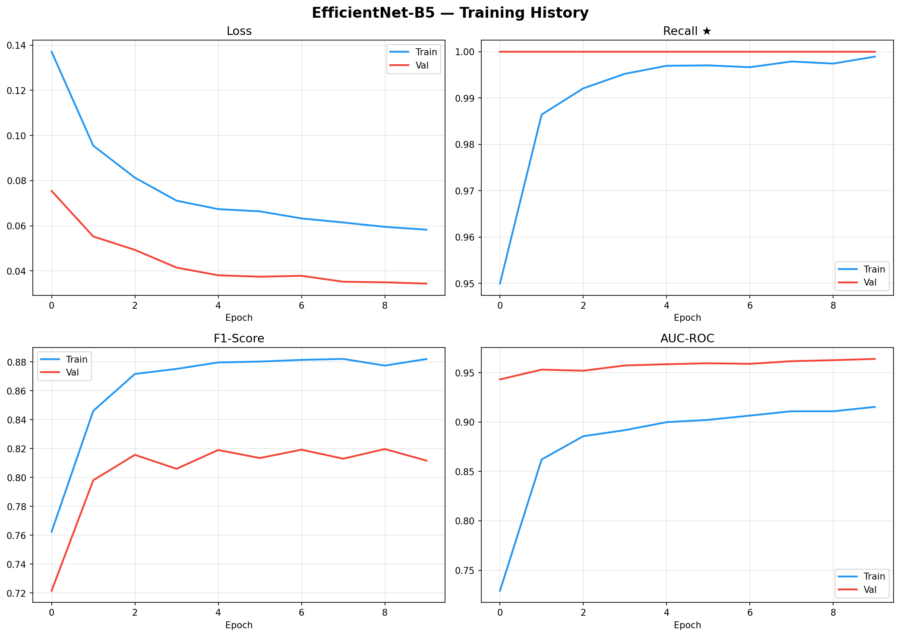
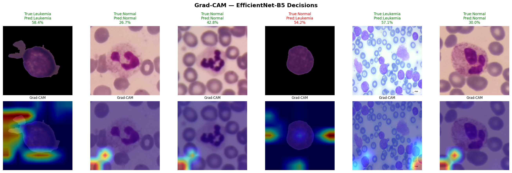

Integrated Project Report: Anemia, Diabetes, and Leukemia Prediction
The project implements an AI-powered clinical classification platform that supports three diagnostic prediction tasks: anemia classification from blood test markers, diabetes status classification from health indicators, and leukemia image classification from microscopic blood smear images. The system combines classical machine learning pipelines with deep learning image models and exposes them through a single browser-based interface.
The anemia and diabetes models are structured-data classifiers based on tabular clinical features. They use preprocessing steps such as missing-value imputation, feature scaling, stratified data splitting, and Random Forest classification. The leukemia module is image-based and uses a deep learning ensemble trained from blood-cell image datasets. It includes a blood-smear validator, EfficientNet-B5, EfficientNet-B4, test-time augmentation, probability ensembling, and Grad-CAM visual explanations.
Clinical classification is a recurring task in healthcare. Physicians often need to interpret laboratory markers, patient health indicators, or medical images to determine whether a patient is healthy, at risk, or affected by a disease. This process can be time-consuming and sensitive to workload, human variability, incomplete data, and the availability of specialists.
Anemia can arise from different causes such as iron deficiency, folate deficiency, vitamin B12 deficiency, or hemoglobin-related abnormalities. Complete blood count parameters and nutritional biomarkers contain useful signals, but interpreting them manually requires experience and consistent reference analysis.
Diabetes and prediabetes are often associated with demographic, lifestyle, and health indicators. Early screening can help identify risk before complications appear. However, large health-indicator datasets contain many correlated variables and imbalanced classes, making manual rule-based classification limited.
Leukemia detection from microscopic blood images requires visual inspection of cell morphology. This task is highly specialized, and errors may have serious consequences. A model that highlights suspicious image regions can support screening, triage, and education, but it must remain explainable and must not replace expert medical review.
Before machine learning integration, clinical classification was commonly performed through rule-based interpretation, manual thresholds, visual inspection, and isolated laboratory systems.
| Approach | Typical Use | Limitations |
|---|---|---|
| Manual threshold rules | Classifying CBC values or diabetes indicators using fixed clinical cutoffs. | Limited ability to combine many weak signals; difficult to personalize; sensitive to missing data. |
| Manual microscopy | Visual examination of blood smear slides by trained specialists. | Requires expert availability; slow at scale; subjective variability can occur. |
| Paper or spreadsheet workflows | Entering lab values into sheets and comparing against references. | Manual entry errors; no automated batch prediction; no reusable model pipeline. |
| Single-purpose tools | Separate applications for each disease or each data format. | Poor integration; repeated user workflows; no unified interface for multiple clinical models. |
These older approaches are still important clinically, but they do not fully exploit modern data-driven pattern recognition. The goal of this project is not to replace medical judgment, but to provide a structured, repeatable, and explainable decision-support layer.
The project proposes a local web application that hosts multiple models behind a common API. The interface allows the user to choose a model, inspect required features, provide input manually or through file upload, and receive predictions with class probabilities.
A scikit-learn pipeline predicts anemia categories from CBC and nutrition markers. It supports manual entry, CSV batch processing, and optional OCR extraction from report images.
A Random Forest classifier predicts no diabetes, prediabetes, or diabetes from structured health indicators using a reusable joblib model bundle.
A deep learning image pipeline analyzes blood smear images with a validator and an EfficientNet ensemble. It returns probabilities and Grad-CAM focus maps for interpretability.
The application is served by a Python HTTP server and a JavaScript frontend. Model metadata drives dynamic forms and model-specific views.
| Model | Dataset / Source Files | Input Type | Target Classes |
|---|---|---|---|
| Anemia | dataset/SKILICARSLAN_Anemia_DataSet.xlsx |
Tabular CBC and nutrition markers | No anemia, mild HGB anemia, iron anemia, folate anemia, B12 anemia |
| Diabetes | dataset/diabetes_012_health_indicators_BRFSS2021.csv |
Tabular health indicators | No diabetes, prediabetes, diabetes |
| Leukemia | lekumiai_train.ipynb and trained weights in lekumiai_model/ |
Microscopic blood smear images | Normal, leukemia suspected, uncertain, invalid image |
The structured models serialize their complete training pipelines as joblib bundles. Each bundle contains
the pipeline, feature names, class metadata, a negative-class identifier, and training metrics. The
leukemia module stores PyTorch model weights separately as .pth files.
The leukemia training notebook builds the image dataset from C-NMC Leukemia, ALL 4-Class cancer images, WBC normal-cell images, and Intel scene images for the image validator. The final classification dataframe contains 30,536 images: 20,534 normal images and 10,002 leukemia images, split into 21,375 training images, 4,580 validation images, and 4,581 test images.
The tabular models convert feature columns to numeric values, remove target leakage columns, and keep only records with valid targets. Missing numeric features are handled using median imputation. This reduces the impact of incomplete records and allows prediction even when some input fields are empty.
Both structured-data training scripts use stratified train-test splitting. Stratification preserves the class distribution across training and test sets, which is especially important in medical classification where positive or minority cases may be underrepresented.
The tabular pipelines apply StandardScaler after imputation. Standardization transforms each
feature into a comparable numerical scale. While Random Forests are not as scale-sensitive as linear
models, scaling keeps the preprocessing pipeline consistent and reusable.
Medical datasets often contain many more normal cases than disease cases. The anemia pipeline uses SMOTE, which synthetically oversamples minority classes by interpolating between existing minority samples. Both anemia and diabetes Random Forest models also use class weights to increase the importance of clinically significant minority classes.
Random Forest is an ensemble of decision trees. Each tree learns decision rules from bootstrapped data and a subset of features, and the final prediction is obtained by voting across trees. It is useful for tabular healthcare data because it can capture nonlinear feature interactions, handle mixed feature importance patterns, and provide robust performance without requiring a very large neural network.
The leukemia module uses convolutional neural network backbones from the timm library.
Convolutional layers learn spatial filters that detect edges, textures, cellular structures, and
higher-level morphology. EfficientNet-B5 and EfficientNet-B4 are used as complementary classifiers,
while MobileNetV3-Small is used as a lightweight image validator.
Transfer learning starts from architectures that are already effective for image recognition and adapts them to blood-cell image classification. This is useful when medical image datasets are smaller than general image datasets. The final classifier heads are trained for the leukemia task.
The leukemia decision combines EfficientNet-B5 and EfficientNet-B4 probabilities. The implementation gives a larger weight to B5 and a smaller weight to B4. Ensemble prediction reduces dependence on a single model and can improve stability when image quality varies.
Test-time augmentation evaluates several transformed versions of the same image, such as flips, rotations, and center crops. The probabilities are averaged. This helps make the prediction less sensitive to slide orientation and minor acquisition differences.
Grad-CAM, or Gradient-weighted Class Activation Mapping, uses gradients flowing into a convolutional layer to identify image regions that influenced the model output. The project displays Grad-CAM maps for the leukemia validator and both classifier models, helping users inspect what image zones contributed to the decision.
lekumiai_train.ipynb contains the complete leukemia training workflow, not only final plots.
It downloads and organizes image datasets, builds labels and splits, defines preprocessing and augmentation,
trains the blood-smear validator, trains the EfficientNet classifiers, calibrates thresholds, saves model
weights, and exports evaluation figures.
A MobileNetV3-Small validator is trained first to separate valid blood-smear images from unrelated images. Its validator dataset uses blood-smear samples as the positive class and Intel scene images as negative examples, allowing the deployed application to reject invalid uploads before running leukemia inference.
The classifier stage uses transfer learning with EfficientNet-B5 as the main model and EfficientNet-B4 as a complementary ensemble model. EfficientNet-B5 includes an attention gate and a multi-layer classifier head. Training uses AdamW, cosine learning-rate scheduling, weighted focal loss, label smoothing, gradient clipping, automatic mixed precision, weighted sampling, early stopping, and MixUp during part of training.
The image pipeline resizes and normalizes inputs, then uses strong augmentation: horizontal and vertical flips, rotations, brightness and contrast changes, hue and saturation shifts, CLAHE, RGB shifts, noise, blur, geometric distortion, coarse dropout, and gamma variation. Blood-cell images also receive CLAHE plus Gaussian blur preprocessing where appropriate.
After training, the notebook calibrates B5, B4, and ensemble thresholds on the validation set using F2-score maximization. The deployed leukemia decision combines EfficientNet-B5 and EfficientNet-B4 with test-time augmentation before returning probability, confidence status, and Grad-CAM explanations.
| File or Folder | Role |
|---|---|
train_model.py |
Trains the anemia model and saves model/anemia_model.joblib. |
train_diabetes_model.py |
Trains the diabetes model and saves model/diabetes_model.joblib. |
lekumiai_train.ipynb |
Notebook used to train the leukemia image validator and EfficientNet classifiers. |
api.py |
Contains model services, prediction logic, OCR extraction, leukemia image inference, and Grad-CAM generation. |
web_app.py |
Runs the local HTTP server and exposes model endpoints. |
web/index.html, web/app.js, web/styles.css |
Implement the frontend interface, dynamic model selection, manual input forms, CSV processing, image upload, and result rendering. |
lekumiai_model/ |
Stores trained leukemia weights and evaluation figures such as confusion matrix, ROC, PR, training history, and Grad-CAM. |
The backend uses Python's built-in ThreadingHTTPServer. The server defines REST-like
endpoints under /api. Model services are created through create_multi_model_api.
Each model key maps to either a tabular ModelService or a specialized
LeukemiaImageService.
| Endpoint | Purpose |
|---|---|
GET /api/models |
Returns available model metadata for the dropdown. |
GET /api/model-info?model=... |
Returns features, classes, title, description, and supported input modes. |
POST /api/predict |
Runs a single tabular prediction. |
POST /api/predict-batch |
Runs multiple tabular predictions from manual batch or CSV rows. |
POST /api/extract-from-image |
Uses OCR to extract anemia-related CBC markers from an uploaded report image. |
POST /api/predict-image |
Runs leukemia image prediction and returns Grad-CAM focus maps. |
The frontend is written in plain HTML, CSS, and JavaScript. It dynamically builds input forms based on model metadata returned by the API. For tabular models, it renders numeric fields and supports CSV upload. For the leukemia model, it hides tabular controls and shows a blood smear image upload workflow with a preview, scanner overlay, prediction result, probability details, and Grad-CAM maps.
The anemia and diabetes models are stored as joblib bundles containing preprocessing and classification
steps. This makes inference consistent with training. The leukemia model is stored as separate PyTorch
state dictionaries: best_validator.pth, best_b5.pth, and best_b4.pth.
python web_app.py.web/index.html and calls /api/models./api/model-info and adapts the input view.The structured models save accuracy, macro F1-score, confusion matrix, test set count, and class counts. Macro F1 is important because it treats each class more equally than simple accuracy, which can be misleading in imbalanced medical datasets. For leukemia, the final notebook test run reports Ensemble + TTA accuracy of 87.62%, recall or sensitivity of 99.86%, precision of 72.29%, F1-score of 83.87%, F2-score of 92.79%, specificity of 81.80%, AUC-ROC of 0.9500, and only 2 false negatives on the test set. The leukemia notebook also produces ROC and precision-recall curves, confusion matrix, and training history plots.




Explainability is essential for clinical software. For structured models, the application reports class probabilities. For leukemia image classification, the application displays Grad-CAM overlays that show the image areas used by each model.

The system is a decision-support prototype. It should not be used as a standalone diagnostic authority. Clinical validation, external testing, regulatory review, bias analysis, and physician oversight are required before any real-world medical use.
This project demonstrates how classical machine learning, deep learning, web programming, and explainable AI can be combined into a unified clinical prediction platform. It improves over older isolated and manual workflows by providing reusable preprocessing pipelines, dynamic model selection, batch processing, image-based leukemia classification, and visual interpretability. The result is a practical prototype for AI-assisted clinical classification, while still requiring careful medical validation before clinical use.